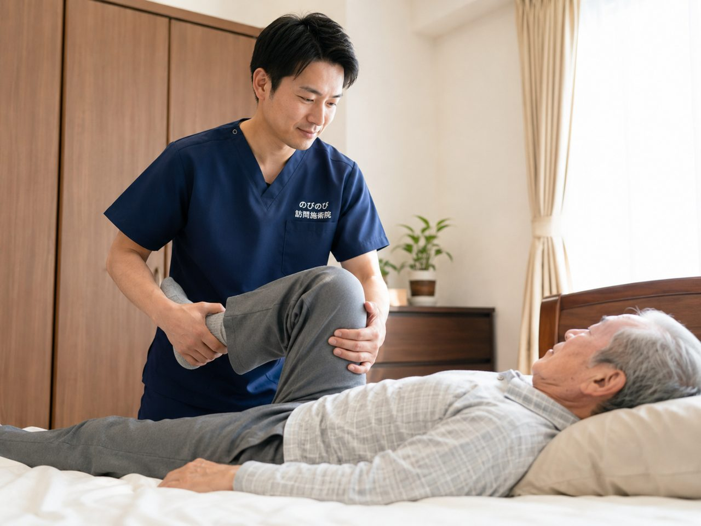

変形徒手矯正術は、関節が固まって動きにくくなった状態（拘縮）に対して、医師の同意にもとづく医療保険（あん摩マッサージの療養費）のなかで行える施術です。運動麻痺や関節の拘縮がある方が対象で、可動域をできるだけ保つことをねらいに、施術者が関節をていねいに動かしていきます。行うのはあん摩マッサージ指圧師で、受けるには医師の同意書が必要です。要介護認定は必要なく、介護保険の限度額とは別枠で組み合わせられます。むずかしい言葉ですが、要は「固まりかけた関節を保険のなかでケアするしくみ」。なお、のびのび訪問施術院が医療保険で行っているのは、はり・きゅうの療養費による施術です。変形徒手矯正術をお考えの方は、この制度をあつかっている施術所にご相談ください。ここではその意味と、受けるための手続きをやさしく整理します。なお、病気そのものを治すものではなく、あらわれ方には個人差があります。
結論から先に。変形徒手矯正術は、医師の同意にもとづくあん摩マッサージ指圧の療養費のなかで行われる施術です。関節の拘縮や運動麻痺のある方が対象で、要介護認定は必要ありません。のびのび訪問施術院が医療保険で行っているのは、はり・きゅうの療養費による施術です。
変形徒手矯正術とは｜固まりかけた関節に向き合う施術
変形徒手矯正術は、関節の動く範囲がせまくなってきた状態に対して、施術者が手で関節をゆっくり動かし、可動域をできるだけ保つことをねらいに行う施術です。あん摩マッサージの療養費のなかに位置づけられていて、医師の同意にもとづいて医療保険で受けられます。
名前は耳慣れませんが、寝て過ごす時間が長い方や麻痺のある方の関節が固まっていくのを、少しでもゆるやかにするためのケア、と考えると分かりやすいです。無理に大きく動かすのではなく、その方の状態に合わせて、痛みが出ない範囲でていねいに進めます。
どんな方が対象？｜関節の拘縮や運動麻痺があるとき
対象になりやすいのは、脳梗塞や脳出血のあとに手足の麻痺が残った方、寝ている時間が長く関節が固まってきた方、リウマチや神経の病気で関節が動かしにくくなっている方などです。共通するのは「関節の拘縮」があること。放っておくと、着替えやおむつ交換、車いすへの移りかえといった毎日の動作がだんだんつらくなります。
変形徒手矯正術は、こうした関節のこわばりに手技で向き合い、動く範囲を保つ手助けをします。ただし、これは病気そのものを治すものではなく、効き方には個人差があります。
医療保険で受けられる｜あん摩マッサージの療養費という枠
変形徒手矯正術は、医師の同意にもとづくあん摩マッサージの療養費のなかで行われます。かかった費用の大部分を健康保険がまかない、お支払いいただくのは負担割合の分だけ、というしくみです。医療保険なので、介護保険の区分支給限度額とは別枠。
デイサービスやヘルパーで限度額を使い切っていても、圧迫せずに組み合わせられます。要介護認定は必要ありません。同じ在宅のケアでも、介護保険とはお金の出どころが違う、という点をおさえておくと安心です。
医師の同意書が必要｜どう進める？
変形徒手矯正術を保険で受けるには、かかりつけの医師の同意書が必要です。「関節の拘縮などに対してマッサージや変形徒手矯正術が必要だ」と医師が認める書類で、これがあってはじめて療養費の対象になります。依頼書の書式は施術所が用意していることが多いので、受けようとしている施術所に相談すると進めやすくなります。
どの診療科の医師でも同意書を書ける場合が多く、整形外科に限られるわけではありません。まずは、いま通っている先生に相談するところから始められます。
料金の考え方｜はり・きゅうとは別の区分で計算されます
あん摩マッサージ指圧の療養費は、はり・きゅうとは別の区分で費用が計算され、施術する部位（肢）に応じて積み上がります。金額はケースによって変わるため、受けようとしている施術所に1回あたりの負担とひと月の見通しを確かめてから始めると安心です。なお、のびのび訪問施術院のはり・きゅうの場合は、1回の総額が3,950円、1割負担の方でおよそ395円が目安です。
当院のはり・きゅうについては、対応エリア内であれば出張費や交通費の上乗せはありません。どこまで行けるかは対応エリア・範囲はどこまで？に書いています。
マッサージや機能訓練との関係｜組み合わせて拘縮の進行にそなえる
変形徒手矯正術は、こわばった筋肉をゆるめる手技や、関節が固まらないよう動かす機能訓練と組み合わせて行うことが多いです。筋肉をやわらげてから関節を動かすほうが、痛みが出にくく、その方の負担も少なくてすみます。毎回まったく同じ内容にはならず、その日の体の状態に合わせて必要なケアを選んで組み立てます。
目的は、動く範囲をできるだけ保ち、毎日の介助や過ごしやすさを支えること。大きく変えることよりも、続けることで進行をゆるやかにしていく発想です。
介護保険との関係｜限度額とは別枠で併用できる
「介護保険の枠がいっぱいで、これ以上は組めない」と言われても、変形徒手矯正術を含む訪問のマッサージは医療保険なので、介護保険の限度額とは別枠です。デイサービスやヘルパー、福祉用具のレンタルはそのままに、関節のケアを加えられる制度になっています。
ケアマネジャーに相談するときは、「介護保険とは別枠の、医療保険のマッサージを入れたい」と一言そえると話が早く通ります。訪問リハビリを受けている方でも、目的や制度が異なるため両方を組み合わせている方がいます。役割の分かれ方はこちらのページで整理しました。
受けるまでの流れ｜相談から開始まで
まずは、対象になりそうかを、かかりつけの医師や、あん摩マッサージ指圧をあつかう施術所に確かめるところから始まります。同意書がそろえば、あとは訪問の日程を決めていく流れです。
関節が固まってきた、着替えや介助がつらくなってきた、といった変化に気づいたら、早めに相談するほど、動く範囲を保ちやすくなります。のびのび訪問施術院では、はり・きゅうの療養費のなかで、痛みやこわばりに対する施術を行っています。どちらにあたるか迷うときは、体の状態をお聞かせください。あらわれ方には個人差があります。
よくある質問
変形徒手矯正術は保険で受けられますか？
はい。医師の同意にもとづくあん摩マッサージ指圧の療養費のなかで、医療保険を使って受けられる施術です。お支払いは負担割合の分だけで、要介護認定は不要です。なお、のびのび訪問施術院が医療保険で行っているのは、はり・きゅうの療養費による施術です。
同意書はどの科の医師に書いてもらえばよいですか？
かかりつけの医師であれば、整形外科に限らず内科などでも同意書を書ける場合が多いです。依頼書の書式は、受けようとしている施術所が用意していることが多いです。
料金はいくらですか？
はり・きゅうは1回の総額3,950円、1割で約395円が目安です。あん摩マッサージ指圧や変形徒手矯正術は別の区分で、施術する部位に応じて計算されます。金額は受けようとしている施術所に確かめてから始めると安心です。
介護保険の限度額を使い切っていても受けられますか？
受けられます。医療保険のマッサージなので、介護保険の区分支給限度額とは別枠です。デイサービスなどを使い切っていても圧迫せず併用できます。
この記事の根拠
はり・きゅう、あん摩マッサージ指圧の療養費は、厚生労働省が定めた取扱いにもとづく制度です。制度そのものをご自身で確かめたいときは、厚生労働省の療養費について（新しいタブで開きます）をご覧ください。「被保険者のみなさまへ」の案内も、同じページからたどれます。
同意書の書式は、厚生労働省がはり、きゅう及びあん摩マッサージ指圧の同意書の取扱い（新しいタブで開きます）で公開しているものと同じです。